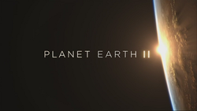
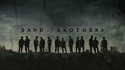
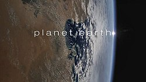
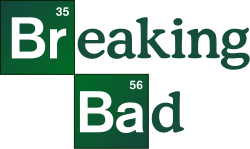

Diziler
Imdb'ye Göre En İyi Diziler
Buradaki tüm dizler Imdb çerçevesinde listelenmiştir.
Planet Earth II

Imdb top 250 listesinin zirvesinde yer alan ve gelmiş geçmiş en zahmetli yapımlardan olan Planet Earth serisinin 2. yapımı Imdb 9.5 puan ile 1. sırada yer almakta. Belgesel 9.5 puanını sonuna kadar hakeden bir yapım. Zira yapımı için 5 yıl uğraşılmış. Yapımcısı BBC olan yapımda karşımıza David Attenborough çıkıyor. Çok değil 6 saat içerisinde sizleri bilgi küpüne çevirecek olan bir belgesel Planet Earth 2. Görüntü kalitesi, çekim aşamaları ve bunların aktarımı hakikatten insanı büyüleyecek cinsten dersek yanılmış olmayız.
Bu belgesele herhangi bir övgü az gelecektir zira aldığı 2 Emmy ödülü de bunu gösterdi. Dileriz ki sizlerde bu yapımdan fazlasıyla faydalanırsınız ve boş zamanınıza keyif katan bir yapım olur.
Band of Brothers

David Nutter, Tom Hanks, David Leland, David Frankel, Tony To Phil Alden Robinson, Richard Loncraine ve Mikael Salomon birçok ünlü yönetmenin bulunduğu bir kadroyla yönetilmiş olan dizi üst düzey bir prodüksiyon kullanılarak beyaz perdeye yansıtılmıştır. Dizide; Damian Lewis, Donnie Wahlberg, Ron Livingston, Matthe Settle ve Neal McDonough gibi ünlerine Band of Brothers ile daha da ün katmış birçok oyuncu rol almıştır.
Dizi, 101. Hava İndirme Tümeni'nin "kolay" bölüğü, 2. tabur, 506. Paraşüt Piyade Alayı'nın tarihini, Amerika Birleşik Devletleri'ndeki atlama eğitiminden Avrupa'daki büyük eylemlere katılımına, Japonya'nın teslim olmasına ve ıı. Dünya Savaşı'nın sonuna kadar dramatize ediyor. Olaylar Ambrose'un Easy Company gazileriyle araştırma ve kaydedilmiş röportajlar. Dizi, tarihi dramatik etki ve dizi yapısına uyarlayarak biraz edebi lisans aldı. Tasvir edilen karakterler Easy Company üyelerine dayanmaktadır. Hayatta kalanlardan bazılarıyla yapılan röportajlardan alıntılar, bölümlerin başlangıcı olarak kullanılır, ancak finalin sonuna kadar isimleriyle tanımlanmazlar.
Game of Thrones

Game of Thrones (Türkçe: Taht Oyunları), David Benioff ve D. B. Weiss tarafından yaratılan ve HBO'da yayımlanan Amerikan fantastik televizyon dizisidir. George R. R. Martin'in epik fantezi serisi Buz ve Ateşin Şarkısı'ndan uyarlanmış olan dizi, adını serinin ilk kitabından almaktadır. İngiltere, Kanada, Hırvatistan, İzlanda, Malta, Fas ve İspanya'da çekilmiştir. İlk bölümü 17 Nisan 2011'de HBO üzerinden yayımlanmış ve sekiz sezon süren yetmiş üç bölümün ardından 19 Mayıs 2019'da sona ermiştir.
Yazların yıllarca sürdüğü ve kışların da bir ömür geçmek bilmediği bir dünyada, Westeros hükümdarlığı kefaretini ödemekteydi. İhanet, şehvet, ayak oyunları ve doğaüstü güçler, entrikacı güney ve yabani doğu topraklarından, soğuk kuzey ve arkasında karanlık diyarları zapt eden Kadim Duvara kadar Krallığın dört bir köşesini hırpalıyor idi. Krallar ve Kraliçeler, Şövalyeler ve sürgündekiler, düzenbazlar ve asiller 'Demir Taht' için kanlı bir mücadeleye tutuşurlar.
Planet Earth

Yeryüzü (İngilizce:Planet Earth); BBC yapımı bir doğa belgeseli dizisidir. İlk kez 2006 yılında BBC'de yayınlanan ve 11 bölümden oluşan diziyi David Attenborough seslendirmiştir. Belgesel, Türkiye'de ise 29 Eylül 2006 tarihinde itibaren NTV kanalında Levent Dönmez'in seslendirmesiyle izleyiciyle buluştu.
BBC One kanalındaki ilk gösteriminde 8,7 milyon kişinin seyretmesiyle %32,1 izleme oranına sahip olan Yeryüzü, BBC Two kanalındaki tekrarlarında bile 3,2 milyon kişi tarfından izlenerek %15,7’lik bir izlenme payına ulaştı.
Belgeselin 2.sinin de 1.sırada olduğunu düşünürsek ne kadar iyi belgesel serisi olduğunu söylemek haksız olmayacaktır.
Breaking Bad

Breaking Bad, Vince Gilligan tarafından tasarlanmış ABD drama televizyon dizisidir. 50 yaşında lisede kimya öğretmeni olan Walter White (Bryan Cranston), bir oto yıkamada ek iş yapmaktadır ancak bir süre sonra ileri derecede akciğer kanseri olduğunu öğrenir. Dizide Walter White ailesine para bırakabilmek için uyuşturcu kullanan muhitleri bilen eski öğrencisi Jesse Pinkman (Aaron Paul) ile birlikte metamfetamin üretmeye başlar.
Bir yanda kimya alanında önemli işlere imza atmış bir öğretmen, diğer yanda bu tehlikeli piyasayı çok iyi tanıyan, gözü pek bir 'eski öğrenci'... Yüksek kalitede ve saflıkta ürettikleri metamfetamin, onları uyuşturucu ticaretinin en riskli yollarına da bulaştıracak...